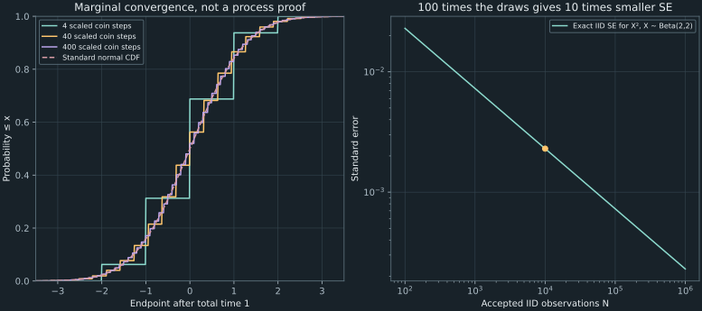
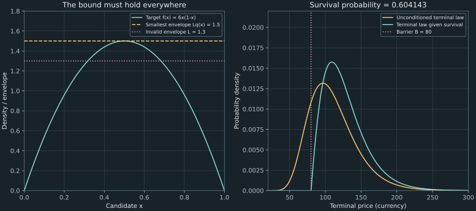

22. Random walks, sampling, and Monte Carlo
A simulator discards stock-price paths that cross a lower barrier and averages the discounted call payoffs of the survivors. It reports about 25.94. A calculation that retains the probability of survival gives about 15.67 for the same contract. Increasing the number of surviving samples makes the first answer more precise without making it the option price. Before asking how fast a simulation converges, we must establish which expectation it estimates.
The running contract is an original teaching example. The stock starts at 100, the strike is 100, the lower barrier is 80, and maturity is one year. The continuously compounded risk-free rate is 10% and annual volatility is 30%. A down-and-out call pays the European call payoff at maturity only if the stock has remained strictly above the barrier throughout the contract. It pays zero after a barrier hit, with no compensating rebate. We will construct the sampler, derive its error, and account for the survival event explicitly.
Source spine: playlist recordings 66, 67, 68, 72 and 73, with the sampling portions of the final R and Python laboratories. The explicit barrier derivation, beta-moment benchmark, proofs, and seeded experiments extend the source material. Rates and prices are synthetic model inputs.
22.1 Specify the law and the quantity being averaged Recording 66, 8:44
Let $X$ be a random input with probability law $F$, and let $\psi$ be a real-valued function of that input. The object to compute is a scalar expectation $\theta=E_F[\psi(X)]$. The input can be a number, a vector of parameters, or an entire sampled path. The function specifies what each input contributes. A sampler is a procedure that generates an input with the required law. Writing those two objects separately lets the same averaging procedure serve different financial contracts.
For independent inputs $X_1,\ldots,X_N$ with the same law $F$, define observations $Y_i=\psi(X_i)$ and the Monte Carlo estimator
\[ \widehat\theta_N=\frac1N\sum_{i=1}^N Y_i. \tag{22.1} \]Independent and identically distributed, abbreviated IID, means the joint law factors into the product of the same marginal law for every observation. Independence is a property of the sampling design; a plausible histogram does not establish it. The estimator has the units of $\psi$. If $\psi$ is a discounted payoff, its mean and standard error both have currency units.
For a European call, an input can be the terminal stock price $S_T$, with $\psi(S_T)=e^{-rT}(S_T-K)^+$, where $x^+=\max(x,0)$, $K$ is the strike, and $r$ is the continuously compounded risk-free rate. Under the frictionless no-dividend pricing model of Chapter 16, the expectation uses the risk-neutral probability law $Q$. That law is a valuation assumption, rather than a forecast of the stock's actual expected return.
A path-dependent contract requires more information. For the running barrier claim, let $S_t$ denote the stock price at time $t$ and define the event $H=\{\inf_{0\leq t\leq T}S_t>B\}$, where $B$ is the lower barrier. The notation $\mathbf1_H$ denotes one when $H$ occurs and zero otherwise. The price is
\[ C_{\mathrm{out}}=e^{-rT}E_Q[(S_T-K)^+\mathbf1_H]. \tag{22.2} \]A terminal price above the barrier does not establish $H$: the stock may have crossed below the barrier earlier and recovered. A path sampler can retain that event if it observes the required path information. Alternatively, a terminal sampler can be combined with the exact conditional survival probability derived in §22.8. Each construction must preserve the expectation in (22.2).
Conditioning the sampler changes its law. If it returns only survivors, averaging the discounted call payoff estimates $e^{-rT}E_Q[(S_T-K)^+\mid H]$. The law of total expectation instead gives $C_{\mathrm{out}}=Q(H)e^{-rT}E_Q[(S_T-K)^+\mid H]$. The missing factor is a probability, so it cannot be recovered by refining an average that never includes it. A small sampling error answers a question about precision only after the expectation has been specified correctly.
22.2 Derive the error of an IID average Recording 66, 11:05 Recording 72, 7:59
Suppose the observations in (22.1) have finite mean $\theta$ and finite variance $v=E[(Y_i-\theta)^2]$. Linearity of expectation gives $E[\widehat\theta_N]=\theta$: the estimator is unbiased, meaning its repeated-sampling mean equals its target. To find its uncertainty, expand the variance of the sum before using independence:
\[ \operatorname{Var}(\widehat\theta_N) =\frac1{N^2}\left(\sum_{i=1}^N\operatorname{Var}(Y_i) +2\sum_{i<j}\operatorname{Cov}(Y_i,Y_j)\right) =\frac vN. \tag{22.3} \]The covariance terms vanish because the observations are independent. The standard error is the standard deviation of the estimator across repeated samples, $\sqrt{v/N}$. It measures variation of an average, not variation of an individual payoff. Dividing a payoff standard deviation by $N$, rather than by $\sqrt N$, would understate the remaining uncertainty.
Finite-variance consistency follows from a probability bound
For any prescribed tolerance $\varepsilon>0$, apply Markov's inequality to the nonnegative variable $(\widehat\theta_N-\theta)^2$. Equation (22.3) gives
\[ \Pr\{|\widehat\theta_N-\theta|\geq\varepsilon\} \leq\frac{E[(\widehat\theta_N-\theta)^2]}{\varepsilon^2} =\frac{v}{N\varepsilon^2}. \tag{22.4} \]This is Chebyshev's inequality in the present setting. For fixed $\varepsilon$, the right side tends to zero as $N$ increases. Thus the average converges to $\theta$ in probability: the probability of an error exceeding any fixed positive tolerance vanishes. This proof uses finite variance. More general laws of large numbers permit weaker assumptions, but they do not automatically supply the variance or error rate in (22.3).
If $0<v<\infty$, the IID central limit theorem further states that $\sqrt N(\widehat\theta_N-\theta)/\sqrt v$ converges in distribution to a standard normal variable. We invoke that theorem rather than prove it; see Sigman's Brownian-motion notes, Theorem 1.1 on printed page 2. It motivates an approximate normal error interval, but gives no universal sample size at which a skewed payoff has become adequately normal.
For observed values and $N\geq2$, compute the sample variance and estimated standard error
\[ s_Y^2=\frac1{N-1}\sum_{i=1}^N(Y_i-\widehat\theta_N)^2, \qquad \widehat{\mathrm{SE}}=\frac{s_Y}{\sqrt N}. \tag{22.5} \]The denominator $N-1$ accounts for estimating the mean from the same observations. Under the stated IID assumptions, a commonly reported approximate 95% interval is $\widehat\theta_N\pm1.96\,\widehat{\mathrm{SE}}$. Its coverage is an asymptotic statement about repeated samples. It is not a probability assigned to a fixed unknown price after this particular interval has been observed, nor an exact finite-sample guarantee. Rare large payoffs can make a short run's variance estimate misleading.
Translate a precision request into a draw budget
The worked problem starts with estimated standard error 0.6 from 2,500 draws and requests 0.15. If the payoff variance remains unchanged, the standard error must shrink by four, so the total number of draws must grow by $4^2=16$:
\[ N_{\mathrm{new}} =2500\left(\frac{0.6}{0.15}\right)^2=40000. \tag{22.6} \]This is a planning estimate based on a pilot variance, not a guarantee that the next run reports exactly 0.15. Likewise, ten times smaller standard error requires one hundred times as many IID observations at fixed variance. Improving the sampler or estimator can change the variance and therefore the budget; merely choosing a new seed does not establish an improvement.
A bounded example makes the uncertainty scale checkable. Let $X$ have density $f(x)=6x(1-x)$ on $0<x<1$, zero elsewhere. This is the beta distribution with parameters $(2,2)$. It is normalized because $\int_0^1(6x-6x^2)\,dx=1$. To estimate $\theta=E[X^2]$, put $Y=X^2$. Direct polynomial integration gives
\[ E[X^2]=6\left(\frac14-\frac15\right)=\frac3{10},\qquad E[X^4]=6\left(\frac16-\frac17\right)=\frac17,\qquad v=\frac17-\left(\frac3{10}\right)^2 =\frac{100-63}{700}=\frac{37}{700}. \tag{22.7} \]At $N=10000$, the exact standard error is $\sqrt{37/(700N)}\approx0.002299068134$. A realized estimate need not lie within one standard error of 0.3. Equation (22.4), the approximate normal interval, and the observed error answer different questions. We will build a rejection sampler for this density and compare its numerical estimate with the independent integral.
Keep sampling error separate from a changed target
If a simulator actually produces a variable with mean $\theta+b$, the constant $b$ is its bias relative to the intended target. Its mean-squared error is $\operatorname{Var}(\widehat\theta_N)+b^2$, because the centered random error has mean zero and its cross term with $b$ vanishes. Increasing $N$ removes the variance term under the IID assumptions, but leaves $b^2$. The opening survivor-only average has precisely this target mismatch unless its missing probability is restored.
There are two further boundaries. Correlated observations retain the covariance terms in (22.3), so the IID standard-error formula need not apply to a Markov chain. Chapter 23 treats that distinction. Conversely, a constant payoff has $v=0$ and its average is exact for every positive $N$. Thus $N^{-1/2}$ describes a nonzero IID standard deviation under fixed finite variance; it is not an unavoidable positive lower bound on every possible numerical error.
22.3 Count paths, state variables, and work per draw Recording 72, 1:30
The exponent $-1/2$ in the standard-error law contains no explicit dimension. Its constant and computational cost still depend on the problem. A draw of one terminal price is cheaper than a draw of a path at thousands of dates. A high-dimensional payoff can also have larger variance than a low-dimensional one. Comparing methods therefore requires both the number of draws needed and the work required for each draw.
In the recombining binomial model of Chapter 8, a stock makes an up or down move at each of $M$ dates. There are $2^M$ ordered paths, but only $M+1$ distinct terminal prices when the number of up moves determines the endpoint. The node with $j$ up moves receives $\binom Mj$ paths: choose which $j$ of the $M$ positions contain an up move. These multiplicities differ across nodes. Dividing the total path count by the node count gives an arithmetic average, not a uniform path count or probability at each node.
| Steps $M$ | Terminal nodes | Ordered paths | Paths per node, arithmetic average |
|---|---|---|---|
| 20 | 21 | 1,048,576 | 49,932.190476 |
| 30 | 31 | 1,073,741,824 | 34,636,833.032258 |
A European payoff is constant over paths with the same terminal stock price. An arithmetic-average payoff need not be. Even an up-then-down path and a down-then-up path can end at the same stock price while having different intermediate prices and averages. A lattice that retains only the current stock price has discarded information needed for that contract. Adding a running sum to the state can recover the needed information, although it enlarges the computational problem. Monte Carlo is useful here; it is not the only possible numerical method for Asian options.
For a different cost comparison, put 50 quadrature nodes on each coordinate of a $k$-dimensional input. A full tensor grid has $50^k$ combinations. The source workshop's two-, four- and ten-coordinate cases require 2,500; 6,250,000; and 97,656,250,000,000,000 evaluations respectively. The first integer dimension for which this exceeds one million is four. These are counts of input combinations. The output can still be a single price or expected utility.
Suppose, more restrictively, that a smooth integrand admits a tensor construction with fourth-order error in a common mesh spacing $h$. The number of nodes grows proportionally to $h^{-k}$. Reducing that asymptotic error by ten then replaces $h$ by $h/10^{1/4}$ and multiplies the node count by $10^{k/4}$. The comparable IID Monte Carlo standard-error multiplier is 100. At dimensions four, eight and twelve the tensor multipliers are 10, 100 and 1,000.
This calculation compares improvement rates under stipulated smoothness and fixed-variance assumptions. It does not establish a universal crossover at dimension eight. Different constants, effective dimension, integrand regularity, sparse constructions, variance reduction and per-evaluation costs can change the practical comparison. Chapter 15's smooth one-dimensional quadrature examples remain cases where deterministic integration can be economical. Simulation becomes attractive when we can generate the required joint law and evaluate each payoff without enumerating all possible inputs.
22.4 Scale a random walk without losing its variance Recording 67, 2:10 Recording 72, 12:21
Let $\varepsilon_1,\ldots,\varepsilon_M$ be independent signs, each equal to $+1$ or $-1$ with probability one half. A symmetric random walk with step magnitude $a>0$ and initial position zero has endpoint $X_M=a\sum_{j=1}^M\varepsilon_j$. Since $E[\varepsilon_j]=0$ and $E[\varepsilon_j^2]=1$, each step has variance $a^2$. Applying the covariance calculation used for (22.3) gives
\[ E[X_M]=0,\qquad \operatorname{Var}(X_M)=Ma^2,\qquad \operatorname{SD}(X_M)=a\sqrt M. \tag{22.8} \]These are distributional statements, rather than promises about a single path. The possible endpoints are $a(2j-M)$ for $j=0,\ldots,M$, with probability $\binom Mj2^{-M}$. In particular, an odd number of steps cannot return to zero. For even $M$, the probability of an endpoint at zero is $\binom M{M/2}2^{-M}$, which is less than one whenever $M>0$. A zero mean therefore does not imply that the walker ends at its starting point.
The worked example has $M=900$ and $a=0.2$. Its variance is $900(0.2)^2=36$, and its standard deviation is 6 position units. The standard deviation describes an uncertainty scale; it is not the expected absolute displacement. Also, after 1,000 unit steps the support is confined to $[-1000,1000]$ with the appropriate parity. Drawing a plot with wider axes does not enlarge that support.
Choose the step from a fixed elapsed time
To approximate motion over a fixed horizon $T>0$, divide time into $M$ equal intervals of length $\Delta t=T/M$. If the step magnitude stays fixed as $M$ grows, endpoint variance $Ma^2$ diverges. If the step magnitude instead equals $\Delta t$, variance becomes $M(\Delta t)^2=T^2/M$ and collapses to zero. The scaling that preserves a finite nonzero variance is
\[ a=\sqrt{\Delta t},\qquad W^{(M)}_{j\Delta t}=\sqrt{\Delta t}\sum_{\ell=1}^j\varepsilon_\ell, \qquad \operatorname{Var}(W^{(M)}_{j\Delta t})=j\Delta t. \tag{22.9} \]The superscript distinguishes this finite-grid walk from a Brownian process. Its coordinates have units of the square root of time under this normalization. A dimensional volatility coefficient can later convert them into log-price fluctuations. For $T=4$ and $M=1600$, the time step is 0.0025, the position step is 0.05, endpoint variance is 4 and endpoint standard deviation is 2. Refining the grid changes the walk's distribution but preserves those endpoint moments.
At a fixed positive time with the number of steps increasing, the central limit theorem explains the approach to a normal endpoint distribution. At $T=1$, for example, $M^{-1/2}\sum_{j=1}^M\varepsilon_j$ approaches $N(0,1)$. Figure 22.1 contrasts exact finite-walk cumulative probabilities with the normal cumulative distribution. A finite walk remains discrete even when its variance equals that of the limiting normal variable.
An endpoint limit alone does not identify the joint law of a whole path. Matching $W_T$ leaves unanswered how values at different times depend on each other, whether increments are independent, and whether a continuous version exists. A functional limit theorem requires additional path-level arguments. We do not derive that theorem here. Instead, the next section states the Brownian process model and constructs its exact finite-grid law directly from independent Gaussian increments. This separates a useful random-walk approximation from an exact grid sampler.

22.5 Generate Brownian increments and exact GBM transitions Recording 67, 10:07
A standard Brownian motion $(W_t)_{t\geq0}$ starts at $W_0=0$, has continuous paths, and has independent increments over disjoint time intervals. For $0\leq s<t$, its increment satisfies $W_t-W_s\sim N(0,t-s)$. Here $N(m,v)$ denotes a normal distribution with mean $m$ and variance $v$, rather than standard deviation $v$. These conditions specify more than a normal endpoint distribution. The existence of such a continuous process is a separate probability result; see Gamarnik's MIT lecture on Brownian motion, sections 3–4.
The dependence across times follows from the increments. For $s\leq t$, write $W_t=W_s+(W_t-W_s)$. The increment is independent of $W_s$ and has mean zero, so $\operatorname{Cov}(W_s,W_t)=\operatorname{Var}(W_s)=s$. By symmetry, the covariance is $\min(s,t)$. The future relative increment is independent of the past; successive levels are not independent.
On dates $0=t_0<t_1<\cdots<t_M=T$, generate independent standard normal variables $Z_1,\ldots,Z_M$ and set
\[ W_{t_j}=W_{t_{j-1}}+\sqrt{t_j-t_{j-1}}\,Z_j. \tag{22.10} \]Each increment has exactly the required Gaussian distribution, and construction makes disjoint increments independent. Adding them gives the required covariance and joint Gaussian law at these dates. This samples Brownian motion exactly on the grid; interpolating straight lines between the observations does not reveal its actual continuous path. For the source workshop, $W_1-W_{0.36}\sim N(0,0.64)$, so its standard deviation is 0.8.
Exponentiation produces positive prices with a specified mean
Let $S_0>0$ be the initial stock price, let $\mu$ be a constant drift per year, and let $\sigma>0$ be a constant volatility per square root of a year. The geometric Brownian motion model is
\[ S_t=S_0\exp\!\left[(\mu-\tfrac12\sigma^2)t+\sigma W_t\right], \qquad \log(S_T/S_0)\sim N\!\left((\mu-\tfrac12\sigma^2)T,\sigma^2T\right). \tag{22.11} \]The drift correction ensures that the mean price grows at rate $\mu$. For $Z\sim N(0,1)$ and a real constant $c$, completing the square in the Gaussian density gives $e^{cz}e^{-z^2/2}=e^{c^2/2}e^{-(z-c)^2/2}$. Integration over the real line therefore gives $E[e^{cZ}]=e^{c^2/2}$. Applying this identity first to $S_T$ and then to $S_T^2$ yields
\[ E[S_T]=S_0e^{\mu T},\qquad \operatorname{Var}(S_T) =S_0^2e^{2\mu T}\bigl(e^{\sigma^2T}-1\bigr). \tag{22.12} \]The variance $\sigma^2T$ in (22.11) belongs to the dimensionless log return. It is not the price variance in (22.12), which has squared currency units. Without the correction in (22.11), the mean price would instead acquire an extra factor $e^{\sigma^2T/2}$. The correction matches the intended mean; its role is more specific than preventing an exponential model from growing.
For the source-72 example, $S_0=40$, $\mu=0.13$, $\sigma=0.4$ and $T=2$. The log return has mean $(0.13-0.4^2/2)2=0.1$ and variance $0.4^2(2)=0.32$. The expected stock price is $40e^{0.26}\approx51.877203467$. Substituting only the log-return mean into $40e^{0.1}$ would omit the contribution of its variance to the expectation of an exponential.
Use exact transitions when their law is available
For an equally spaced grid, (22.10) and (22.11) give the recursion
\[ S_{t_j}=S_{t_{j-1}} \exp\!\left[(\mu-\tfrac12\sigma^2)\Delta t +\sigma\sqrt{\Delta t}\,Z_j\right]. \tag{22.13} \]Multiplying transitions adds their log increments. Their sum has mean $(\mu-\sigma^2/2)T$ and variance $\sigma^2T$, independently of the number of grid intervals. This is an exact grid transition under constant-coefficient GBM, rather than an Euler approximation to its stochastic differential equation. A terminal-only payoff can use a single normal draw at horizon $T$. An Asian payoff needs its monitoring-date observations; a continuous barrier needs additional between-date information.
The paired labs use $S_0=100$, $\mu=0.1$, $\sigma=0.3$ and $T=1$. Equations (22.11)–(22.12) give mean 110.517091808 and standard deviation 33.915295939. An empirical range such as 50 to 350 is the range of that particular finite sample, not the support of the lognormal distribution. The mathematical model assigns positive probability to every positive price interval.
The probability of exceeding a threshold $\ell>0$ can be checked without simulation. With $\Phi$ denoting the standard normal cumulative distribution function, monotonicity of the logarithm and symmetry of a standard normal variable give
\[ \mathbb P_\mu\{S_T>\ell\} =\Phi\!\left( \frac{\log(S_0/\ell)+(\mu-\sigma^2/2)T}{\sigma\sqrt T} \right). \tag{22.14} \]The notation $\mathbb P_\mu$ denotes the stipulated GBM law with drift $\mu$; it need not be a pricing measure. For the lab inputs, the probabilities of exceeding 100 and 106 are approximately 0.572731759 and 0.495653067. The first compares terminal wealth with the initial outlay. The second compares it with a stipulated certain terminal payoff of 106. This 6% alternative is an illustrative benchmark, rather than a current deposit quotation.
For option valuation in the no-dividend model, use drift $r$ under the risk-neutral measure $Q$. For a physical return forecast, a different $\mu$ can be appropriate, with different interpretation and estimation uncertainty. Replacing a physical input by $r$ does not prove a no-arbitrage theorem; it specifies the already justified pricing model. The distinction is essential when the same simulator later feeds an investor's expected utility.
22.6 Generate a terminal price by inverse transformation Recording 68, 4:35 Recording 73, 1:10
A cumulative distribution function, or CDF, is $F(x)=\Pr(X\leq x)$. Suppose first that $F$ is continuous and strictly increasing over its support. If $U$ is uniform on $(0,1)$, then $X=F^{-1}(U)$ has CDF $F$, since $\Pr(F^{-1}(U)\leq x)=\Pr(U\leq F(x))=F(x)$. This turns an easy uniform draw into a draw from a desired distribution whenever its inverse can be evaluated.
The construction also handles a CDF with jumps or flat parts if the inverse is defined correctly. For $0<u<1$, define the generalized inverse $F^{-1}(u)=\inf\{x:F(x)\geq u\}$. A proper CDF tends to zero and one at its two infinite limits, so this infimum is finite. Monotonicity and right continuity ensure $F(F^{-1}(u))\geq u$: approach the infimum from above through points whose CDF is at least $u$. Consequently, $F^{-1}(u)\leq x$ if and only if $u\leq F(x)$, giving the same probability calculation. An ordinary algebraic inverse is unnecessary for this distributional result.
For GBM, the inverse construction uses a standard normal quantile $Z=\Phi^{-1}(U)$. Substitution into (22.11) gives
\[ S_T=S_0\exp\!\left[ (\mu-\tfrac12\sigma^2)T+\sigma\sqrt T\,\Phi^{-1}(U) \right]. \tag{22.15} \]The expression generates the terminal marginal law directly, with one normal variable for each price. It does not simulate a daily path and then throw away all but its last value. A numerical normal generator can supply $Z$ without literally applying an inverse CDF, but it must implement the same normal law. The companion's explicit inverse examples use Python's documented NormalDist.inv_cdf, which requires probabilities strictly between zero and one.
Distinguish rounded uniforms from exact normal quantiles
Aparna's source workshop specifies $S_0=80$, $r=0.06$, $\sigma=0.2$ and $T=1$ under $Q$. The log-return mean is 0.04 and its standard deviation is 0.2. The displayed uniforms approximate normal probabilities at $-1,0,1,2$. Treating those convenient normal values as exact gives one set of answers; applying a quantile routine to the printed four-decimal uniforms gives slightly different ones.
| Printed $U$ | Convenient $Z$ | $80e^{0.04+0.2Z}$ | Using $\Phi^{-1}$ of printed $U$ |
|---|---|---|---|
| 0.1587 | −1 | 68.171503117 | 68.174024233 |
| 0.5000 | 0 | 83.264861935 | 83.264861935 |
| 0.8413 | 1 | 101.699932026 | 101.696171102 |
| 0.9772 | 2 | 124.216577481 | 124.193654557 |
The difference is an input-rounding effect, not evidence that a direct terminal draw is wrong. Both columns must retain their input convention. A terminal law check should compare distributions or couple the same underlying shocks; independently generated paths need not produce identical prices.
Combine two time steps with the right normal scaling
For two half-year intervals, use the source's normal draws $Z_1=0.9$ and $Z_2=0.5$. The first price is $80\exp(0.02+0.2\sqrt{0.5}(0.9))\approx92.694195559$. Multiplying by the second transition gives final price approximately 101.495710185. Adding the two log increments produces drift 0.04 and random term $0.2\sqrt{0.5}(0.9+0.5)$. Thus the single full-year normal input for the coupled calculation is
\[ Z_*=\frac{Z_1+Z_2}{\sqrt2} \approx0.989949494,\qquad 80e^{0.04+0.2Z_*}=101.495710185\ldots. \tag{22.16} \]When $Z_1$ and $Z_2$ are independent standard normal variables, their normalized sum is itself standard normal: its mean is zero, its variance is $(1+1)/2=1$, and Gaussian linear combinations remain Gaussian. Using their unscaled sum as the full-year shock would double its variance. Equality of the coupled endpoints follows algebraically from (22.13), without an appeal to agreement of independent sample estimates.
If an analytic quantile is unavailable, numerical CDF inversion can still be possible, using a monotone root solver with controlled tail and inversion errors. Rejection sampling offers another route that requires pointwise density evaluation and a global envelope. The next section derives why that envelope matters.
22.7 Prove a rejection sampler and audit its envelope Recording 68, 11:48 Recording 73, 8:08
Let $f$ be the normalized target probability density and let $q$ be a proposal density from which draws are easy to generate. Require $q(x)>0$ wherever $f(x)>0$. A finite envelope bound $L$ must satisfy $f(x)\leq Lq(x)$ throughout the support, apart from sets of probability zero. Since both densities integrate to one, integrating this inequality gives $L\geq1$. A few sampled ratios below one cannot verify the global condition.
Draw a candidate $V$ from $q$ and an independent uniform variable $U$ on $(0,1)$. Accept $V$ if $U\leq f(V)/(Lq(V))$; otherwise discard it and draw a fresh independent pair. The envelope ensures the acceptance probability is between zero and one. Here the symbol $q$ means a proposal density; the pricing probability measure remains the uppercase $Q$.
Why the accepted law is $f$. Let $A$ be any measurable set of candidate values and let $J$ denote the event that one proposal is accepted. Conditioning on its candidate gives
\[ \Pr(V\in A,J)=\int_A q(x)\frac{f(x)}{Lq(x)}\,dx =\frac1L\int_A f(x)\,dx. \tag{22.17} \]Taking $A$ to be the whole support gives $\Pr(J)=1/L$. Dividing the preceding equality by this probability gives $\Pr(V\in A\mid J)=\int_A f(x)\,dx$. Thus rejection changes the proposal law into the required target law. Repeating independent proposal pairs yields independent accepted draws. The number $R$ of proposals through the first acceptance has $\Pr(R=j)=(1-1/L)^{j-1}/L$ for $j\geq1$, so its mean is $E[R]=L$.
This argument makes the cost interpretation precise. Choosing a valid larger bound preserves the target but reduces acceptance. Choosing a smaller bound can invalidate the distribution. The construction and proof are also given in Sigman's acceptance-rejection notes, pages 1–2. Our implementations must establish the bound for the particular target rather than selecting two or three solely to obtain a convenient empirical acceptance rate.
The source table demonstrates the decision rule
The worked problem supplies five evaluated ratios and five uniforms. The actual table is recovered from the recording; it does not supply enough information to reconstruct or certify the entire target density.
| Candidate | $f(V)/(Lq(V))$ | Uniform | Decision |
|---|---|---|---|
| 1 | 0.62 | 0.33 | Accept |
| 2 | 0.18 | 0.55 | Reject |
| 3 | 0.91 | 0.20 | Accept |
| 4 | 0.07 | 0.88 | Reject |
| 5 | 0.45 | 0.41 | Accept |
Three acceptances from five proposals give realized acceptance 0.6. Under a valid normalized envelope with $L=2$, the theoretical probability is 0.5 and the expected number of proposals per retained draw is two. A short random sample need not achieve that fraction exactly. Its result neither disproves the theoretical rate nor proves that the unseen global envelope is valid.
Derive the bound for the final laboratories' beta target
Return to the density $f(x)=6x(1-x)$ on $(0,1)$. Choose the uniform proposal $q(x)=1$ there. Completing the square gives $f(x)=1.5-6(x-0.5)^2$, so its maximum is exactly 1.5. The smallest valid bound is therefore $L=1.5$, with acceptance probability $2/3$. Bounds two and three are also valid, with probabilities one half and one third. The density and its valid envelope appear in Figure 22.2.
A bound 1.3 is invalid because the target exceeds that envelope near its center. Silently clipping an acceptance ratio at one does not repair the target. With that clipping, the accepted joint density becomes $\min(q(x),f(x)/L)$; after normalization its shape is proportional to $\min(Lq(x),f(x))$. Where the original envelope fails, the target's peak is flattened. A sampler can then return values in the correct interval and a plausible mean while having the wrong distribution.
The normalized-density assumption also controls the rate formula. If only a nonnegative kernel $k$ is known, with finite positive normalizing integral $Z_k=\int k(x)\,dx$, suppose $k(x)\leq Cq(x)$ globally. Accepting with probability $k(V)/(Cq(V))$ gives acceptance probability $Z_k/C$ and accepted density $k/Z_k$. The unknown normalizing constant cancels from the conditional law, but the acceptance rate is not generally $1/C$. This distinction will matter when a target is a posterior density known only up to scale.
22.8 Retain survival probability when conditioning a barrier sampler Recording 68, 9:54
The running barrier claim now supplies a case where a useful rejection sampler changes a price unless its normalization is retained. Work under $Q$ with constant $r$, positive $\sigma$ and $T$, initial price $S_0>B>0$, and no dividends or rebate. Define the log distance above the barrier by $A_t=\log(S_t/B)$, its initial value by $d=\log(S_0/B)>0$, and its drift by $a=r-\sigma^2/2$. Then $A_t=d+at+\sigma W_t$. Write $y=A_T$ for its terminal value and $s=\sigma\sqrt T$ for its terminal standard deviation.
Conditioning removes the constant drift from the bridge
The path given its two endpoints is called a Brownian bridge after its deterministic endpoint interpolation is removed. Algebra gives
\[ A_t-\left[d+\frac tT(A_T-d)\right] =\sigma\left(W_t-\frac tTW_T\right). \tag{22.18} \]The residual has covariance zero with $W_T$, since $\operatorname{Cov}(W_t,W_T)=t$ and $\operatorname{Var}(W_T)=T$. Brownian finite-dimensional vectors are jointly Gaussian, so zero covariance here gives independence. Its conditional mean is zero, and its covariance at times $t,u$ is $\sigma^2(\min(t,u)-tu/T)$. Consequently the conditional path law given $A_T=y$ does not depend on $a$. The constant drift changes the endpoint distribution, but not the remaining bridge fluctuations given that endpoint.
We invoke the Brownian reflection principle for the next step; Huang's Lecture 25, slides 3–6, develops drift independence and the conditional crossing calculation. For a driftless process starting at $d>0$, reflection after its first hit of zero pairs crossing paths ending at $y>0$ with paths having endpoint density equal to that from starting point $-d$. This path reflection preserves Brownian law. Proving that preservation at a random hitting time requires the strong Markov property; we use the cited process result rather than claim a new proof of it.
Define the centered Gaussian density with standard deviation $s$ by $g_s(z)=e^{-z^2/(2s^2)}/(s\sqrt{2\pi})$. The driftless endpoint density is $g_s(y-d)$; the part that has crossed zero has density $g_s(y+d)$. Their ratio therefore gives the conditional crossing probability. For $y>0$, survival probability is
\[ h(y)=1-\frac{g_s(y+d)}{g_s(y-d)} =1-\exp\!\left[-\frac{(y+d)^2-(y-d)^2}{2s^2}\right] =1-\exp\!\left(-\frac{2dy}{s^2}\right). \tag{22.19} \]Set $h(y)=0$ when $y\leq0$, because such an endpoint cannot belong to a path that stayed above the barrier. Drift independence makes (22.19) valid for the log-price bridge with drift $a$ as well. This formula includes crossings between sampled dates. A grid that merely tests observed prices above $B$ misses some of those crossings and therefore values a different, discretely monitored event.
Integrate the event instead of silently discarding it
Conditional expectation of the indicator is $E_Q[\mathbf1_H\mid S_T]=h(\log(S_T/B))$. Applying the tower property to (22.2) gives the exact terminal-only representation
\[ C_{\mathrm{out}}=e^{-rT} E_Q\!\left[(S_T-K)^+h\bigl(\log(S_T/B)\bigr)\right]. \tag{22.20} \]Thus one exact lognormal terminal draw can contribute a fractional survival-weighted payoff. Alternatively, draw an additional independent uniform and retain the endpoint when it is at most $h$. The retained terminal law is precisely the law given survival. If $p_H=Q(H)=E_Q[h(A_T)]$ and $f_S$ is the unconditional terminal-price density, the retained density is
\[ f_{S\mid H}(x)=\frac{f_S(x)h(\log(x/B))}{p_H}. \tag{22.21} \]This density integrates to one because of the division by $p_H$. Averaging a call payoff under it gives the conditional value. The required price is that value multiplied by $p_H$. Equation (22.21) identifies the missing quantity in a survivor-only estimator; an accurate sampler for a normalized conditional density does not include the probability of the conditioning event automatically.
Conditioning can also reduce variance when used as in (22.20). Let $Y=e^{-rT}(S_T-K)^+\mathbf1_H$ and $\widetilde Y=E[Y\mid S_T]$. Expanding the centered square of $Y=(Y-\widetilde Y)+\widetilde Y$ and conditioning makes the cross term zero. Hence
\[ \operatorname{Var}(Y) =\operatorname{Var}(\widetilde Y) +E[\operatorname{Var}(Y\mid S_T)] \geq\operatorname{Var}(\widetilde Y). \tag{22.22} \]The finite second moments needed here follow from the lognormal stock's finite second moment and the bounded survival indicator. Analytically averaging the remaining event uncertainty therefore cannot increase the one-draw variance. This conclusion compares unbiased estimators of the same price; it does not justify dropping the event probability.
Check the price against an analytic image calculation
There is an independent benchmark for this constant barrier. Multiplying the endpoint density of $A_T\sim N(d+aT,s^2)$ by (22.19) and completing the square gives, for $y>0$,
\[ h(y)g_s(y-d-aT) =g_s(y-d-aT)-\eta g_s(y+d-aT), \qquad \eta=e^{-2ad/\sigma^2}. \tag{22.23} \]The exponent identity follows by expanding the two squared terms: the factor independent of $y$ is $-2ad/\sigma^2$. Integrating over positive $y$ therefore gives
\[ p_H=\Phi\!\left(\frac{d+aT}{s}\right) -\eta\Phi\!\left(\frac{-d+aT}{s}\right). \tag{22.24} \]For $K\geq B$, the call payoff is already zero when $y<0$, so the payoff integrals in (22.23) can be extended to the full real line. The first is the ordinary GBM call integral starting at $S_0$. The second starts at the image price $B e^{-d}=B^2/S_0$, with the same $r,\sigma,T$. Let $C_{\mathrm{BS}}(S,K;r,\sigma,T)$ denote the vanilla call formula derived in Chapter 16. Then
\[ C_{\mathrm{out}} =C_{\mathrm{BS}}(S_0,K;r,\sigma,T) -\eta C_{\mathrm{BS}}(B^2/S_0,K;r,\sigma,T), \qquad K\geq B. \tag{22.25} \]The strike restriction is consequential. For $K<B$, extending the payoff integrals below the barrier would add nonzero contributions, so this particular formula cannot be carried over unchanged. A changing barrier, stochastic volatility, jumps, rebates or different monitoring rules likewise require a new calculation.
| Quantity | Value |
|---|---|
| Survival probability $p_H$ | 0.604143096882 |
| Vanilla call value | 16.734133582387 |
| Down-and-out call value | 15.672040593654 |
| Discounted payoff mean given survival | 25.940941267931 |
The original seeded run uses 400,000 terminal draws and reports weighted price 15.679189140 with estimated standard error 0.037112872. The separate accept-survival calculation reports conditional average 25.931862762 and realized survival fraction 0.604407500; their product is 15.673412342. For that same finite sample, this product equals the mean that assigns zero to every rejected payoff, by the definition of an arithmetic average. Its proximity to the analytic price is numerical evidence, not the proof of the normalization identity.
Finally, the unconditional terminal law is a proposal for the survivor-conditioned density in (22.21). Its density ratio is $h/p_H$, with supremum $1/p_H$ because $h(y)$ approaches one as $y$ increases. For the same model with barrier raised to 95, survival is approximately 0.164201078192, so any such normalized envelope needs $L\geq6.090093993$. Bounds two and three fail. Accepting directly with probability $h$ avoids needing the normalizer to generate survivors; recovering the unconditional option price still needs the survival probability or the full proposal record.

22.9 Reproduce the sampling parts of the R and Python laboratories Recording 75, 0:16 Recording 76, 0:15
The final paired laboratories assemble the preceding components in the same order: unscaled coin walks, diffusion scaling, GBM paths and terminal moments, inverse-lognormal draws, rejection sampling, and a generic expectation. Their later European-pricing and posterior-utility portions belong to Chapter 23; the Asian contracts belong to Chapter 24. Here the laboratory task is to make each sampler's input, output and check explicit.
For a terminal coin walk, generate the number of up steps $J\sim\operatorname{Binomial}(M,1/2)$ and return $a(2J-M)$. This has exactly the endpoint distribution derived in §22.4 without storing every sign. It cannot recover the intermediate path. To plot a path, generate and accumulate its individual signs. For an exact Brownian grid, use Gaussian increments instead; matching a coin walk's variance does not change its finite-grid distribution into a Gaussian one.
The GBM path routine takes the initial price, drift, positive volatility, positive horizon, and a vector of finite normal draws. It returns the initial value followed by the grid prices in (22.13), so $M$ draws produce $M+1$ entries. The initial entry is not an additional elapsed period. When a later contract averages monitored prices, its specification must say whether this entry is included.
The following R translation constructs a GBM path with the same mathematical parameterization. The R manual defines the second numerical normal parameter as a standard deviation; its lognormal generator likewise takes mean and standard deviation on the logarithmic scale. These are documentary language examples; no local R execution is claimed.
gbm_path <- function(S0, mu, sigma, T, M) {
stopifnot(S0 > 0, sigma > 0, T > 0, M > 0, M == as.integer(M))
dt <- T/M
increments <- (mu-sigma^2/2)*dt + sigma*sqrt(dt)*rnorm(M)
c(S0, S0*exp(cumsum(increments)))
}
set.seed(42)
path <- gbm_path(100, 0.1, 0.3, 1, 252)
terminal <- rlnorm(10000, log(100)+(0.1-0.3^2/2), 0.3)
mean(terminal)
sd(terminal)
mean(terminal > 106)
The path and direct draws answer different sampling tasks with the same terminal model. Their finite empirical means need not coincide. A seed controls an implementation's pseudorandom sequence together with its algorithm, call order and environment. The same integer in R and NumPy does not imply the same stream or path. NumPy's compatibility policy states the conditions required even within NumPy. Record the generator and calls as well as the seed when reproducing an experiment.
An executable rejection experiment with no hidden notebook state
The Python block below is complete: it imports its dependency, constructs its generator, generates a fixed number of proposal pairs, retains every accepted candidate, and computes (22.5) from the accepted squared observations. The target moments are the independently integrated values in (22.7). The acceptance fraction uses the number of proposals as its denominator; the standard error uses the number of accepted observations.
import math
import numpy as np
rng = np.random.Generator(np.random.PCG64(2203))
proposals = 60_000
candidate = rng.random(proposals)
uniform = rng.random(proposals)
accepted = candidate[uniform <= 4*candidate*(1-candidate)]
y = accepted**2
mean = float(np.mean(y))
se = float(np.std(y, ddof=1)/math.sqrt(y.size))
assert abs(mean - 0.3) < 6*se
assert abs(y.size/proposals - 2/3) < 0.01
print(mean, se, y.size/proposals)
The algebra $f/(Lq)=4x(1-x)$ uses the proved bound $L=1.5$. Observed moment agreement is a finite numerical check, not an alternative proof of the accepted law. Conditional on the number retained in this fixed proposal batch, their values have the target law and the usual IID mean variance for that count. Retaining every acceptance avoids confusing discarded excess values with an observed acceptance rate.
The complete companion, ch22_sampling.py, also reproduces the tree/grid counts, 40,000-draw planning result, random-walk moments, GBM workshop, both quantile-rounding conventions, coupled two-step path, source rejection table, and the barrier benchmark. Its original PCG64 teaching runs use seeds 2201 and 2202. The walk run gives mean 0.009364000 and variance 35.952097436 against exact zero and 36. Its beta run retains 39,959 of 60,000 proposals and gives squared-mean estimate 0.299913360 with estimated standard error 0.001151044. That beta stream follows the walk draws, so it differs from the standalone block's stream.
Run python code/ch22_sampling.py with the pinned NumPy environment. The public program reads no data, uses no network, and writes no files. It rejects invalid checked sizes, probabilities, envelope bounds and model domains, and raises on floating-point overflow or underflow in its GBM exponentiation. It is intended for the moderate synthetic inputs shown here; finite input checks do not certify every extreme floating-point calculation. Standalone program assertions and sampled moment comparisons are implementation evidence. The mathematical distribution identities supply the separate sampler argument.
22.10 Exercises with worked solutions
Exercise 22.1: distinguish an error bound from an approximate interval
Let $X$ have density $6x(1-x)$ on $(0,1)$ and estimate $E[X^2]$ from 10,000 IID observations. Derive its mean and variance, compute a Chebyshev bound for absolute error at least 0.01, and give the normal approximation's theoretical 95% half-width. Separately, plan the total draws needed to reduce a pilot standard error from 0.6 to 0.15 when the pilot used 2,500 draws.
Worked solution
Polynomial integration gives $E[X^2]=6(1/4-1/5)=3/10$ and $E[X^4]=6(1/6-1/7)=1/7$. Thus $\operatorname{Var}(X^2)=1/7-9/100=(100-63)/700=37/700$. Independence gives variance $37/(700N)$ for the sample average. At $N=10000$, standard error is approximately 0.002299068134. Chebyshev gives $\Pr(|\widehat\theta_N-0.3|\geq0.01)\leq(37/700)/(10000(0.01)^2)\approx0.052857142857$. This is a finite-sample bound using the known variance. The normal approximation's half-width is $1.96\sqrt{37/(700N)}\approx0.004506173543$; interpreting it as 95% coverage requires the approximation, rather than Chebyshev. With an estimated variance, its value also varies across samples. For the separate pilot, unchanged variance gives $N_{\mathrm{new}}/2500=(0.6/0.15)^2=16$, hence 40,000 total draws. An error in the sampler's target is not removed by this increase.
Exercise 22.2: diagnose information lost by recombination
A 20-step stock tree recombines by the number of up moves. Count terminal prices, ordered paths and paths reaching the central node. Explain why equal weighting of the terminal nodes is generally wrong, and why the same stock node may not suffice for an average-price payoff.
Worked solution
There are 21 counts of up moves, $j=0,\ldots,20$, and $2^{20}=1048576$ ordered move sequences. The central node has ten up moves and is reached by $\binom{20}{10}=184756$ sequences; either extreme has only one. With fair independent moves, its probability is $184756/1048576$, while either extreme has probability $1/1048576$. More generally, an up probability $q_{\mathrm{up}}$ gives node probability $\binom{20}{j}q_{\mathrm{up}}^j(1-q_{\mathrm{up}})^{20-j}$. Equal node weights ignore both multiplicities and move probabilities. Two paths with the same up count may have their up moves at different dates. Their products of up/down factors agree at maturity, while their intermediate levels and running sums need not. Adding the accumulated sum to the stock state preserves the arithmetic-average information. This enlarges the state space but explains why simulation is useful without asserting that every non-simulation method is impossible.
Exercise 22.3: separate diffusion scaling, endpoint laws, and price moments
Over horizon four with 1,600 independent fair steps, compare step magnitudes 0.2, $\Delta t$ and $\sqrt{\Delta t}$. Does matching Brownian endpoint variance make the finite walk Brownian? For the separate GBM inputs $S_0=40$, $\mu=0.13$, $\sigma=0.4$, $T=2$, derive the log-return distribution and expected price.
Worked solution
The time step is $\Delta t=4/1600=0.0025$. Variance of a fair-step sum is $Ma^2$, so the three endpoint variances are $1600(0.2)^2=64$, $1600(0.0025)^2=0.01$, and $1600(0.05)^2=4$. As $M$ grows at fixed horizon, the first rule diverges, the second collapses, and the square-root rule retains variance four. Nevertheless, its finite endpoint law is discrete, while a nondegenerate Brownian endpoint is Gaussian. Matching one moment also does not specify independent increments or continuous path laws; even a marginal CLT alone does not establish process convergence. For GBM, the log return is normal with mean $(0.13-0.4^2/2)2=0.1$ and variance $0.4^2(2)=0.32$. The Gaussian exponential moment gives $E[S_T]=40e^{0.1+0.32/2}=40e^{0.26}\approx51.877203467$. The expected exponential is not the exponential of the expected log return.
Exercise 22.4: couple a coarse terminal draw to two fine increments
Under the source-73 inputs $S_0=80$, $r=0.06$, $\sigma=0.2$, $T=1$, combine two half-step normal inputs 0.9 and 0.5 into a full-step input. Show why adding them without normalization changes the law. Explain the two different prices associated with printed uniform 0.9772.
Worked solution
Each half step has drift contribution $(0.06-0.2^2/2)/2=0.02$ and normal coefficient $0.2\sqrt{0.5}$. Thus $S_{0.5}=80e^{0.02+0.2\sqrt{0.5}(0.9)}\approx92.694195559$. The second transition gives $S_1=80e^{0.04+0.2\sqrt{0.5}(0.9+0.5)}\approx101.495710185$. The matching full-step input is $Z_*=(0.9+0.5)/\sqrt2\approx0.989949494$. For independent standard normal inputs, this normalized sum has variance one, whereas their unscaled sum has variance two. The equality of the coupled terminal prices is exact algebraically, up to arithmetic evaluation. Treating 0.9772 as a rounded representation of $\Phi(2)$ gives $80e^{0.44}\approx124.216577481$. Applying the inverse CDF to the literal rounded number gives approximately 124.193654557. Neither convention can be silently substituted for the other.
Exercise 22.5: derive rejection cost with and without normalization
Use a uniform proposal for kernel $k(x)=x(1-x)$ on $(0,1)$. Find its normalizer and the smallest kernel-envelope constant. Derive the accepted density and acceptance rate. Explain why using normalized bound 1.3 with acceptance clipped at one is invalid, even if a short sample mean is near one half.
Worked solution
The normalizer is $Z_k=\int_0^1(x-x^2)\,dx=1/6$. The kernel has maximum $C=1/4$ at $x=1/2$, since $x(1-x)=1/4-(x-1/2)^2$. Accepting a uniform candidate with probability $k/C=4x(1-x)$ gives joint accepted density $4x(1-x)$ and acceptance $Z_k/C=2/3$. Dividing that density by $2/3$ gives $6x(1-x)$, the normalized beta target. Its normalized bound is $L=C/Z_k=1.5$, so the expected proposal count is $1.5$. For normalized bound 1.3 the envelope is below the peak. Clipping produces accepted density proportional to $\min(1.3,6x(1-x))$, not the target. That altered density is still symmetric about one half, so even its exact mean is one half. A mean check alone cannot reveal this distributional error; the global envelope proof does.
Exercise 22.6: correct a survivor-only price and justify variance reduction
For the running barrier example, an exact survivor-conditioned sampler returns discounted payoff mean 25.940941267931. Recover the price and explain why a bound of three fails when the barrier is raised to 95. Prove that the conditional survival-weighted estimator has no greater variance than one that simulates an additional survival indicator.
Worked solution
Conditioning divides joint surviving mass by $p_H$. Therefore the unconditional price is $p_HE[e^{-rT}(S_T-K)^+\mid H]$. Multiplying by $p_H\approx0.604143096882$ gives approximately 15.672040593654, with rounding inherited from the printed factors. Equivalently, average $(S_T-K)^+h(\log(S_T/B))e^{-rT}$ over unconditional terminal draws. When $B=95$, the density ratio of the conditional target to the unconditional proposal is $h/p_H$, whose supremum is $1/p_H\approx6.090093993$. Since $3$ is smaller, it cannot be a valid global envelope for this target. Finally, write $Y$ for the discounted payoff times a Bernoulli indicator with conditional success probability $h$. Then $\widetilde Y=E[Y\mid S_T]$ is the weighted payoff. The residual $Y-\widetilde Y$ has conditional mean zero and is uncorrelated with $\widetilde Y$. Expanding the variance gives $\operatorname{Var}(Y)=\operatorname{Var}(\widetilde Y)+E[\operatorname{Var}(Y\mid S_T)]$. The second term is nonnegative. This comparison requires the same target and finite second moments; it does not apply to the biased survivor-only average without its probability factor.
22.11 Sources, assumptions, and reproducibility
Recordings 66–68 supply the sequence from Monte Carlo motivation through random walks, Brownian motion, GBM and samplers. Recordings 72–73 supply the path/grid budgets, precision calculation, diffusion and GBM workshops, inverse-transform example and rejection decisions. The opening portions of recordings 75–76 provide the paired implementation workflow through generic expectation and beta rejection. Their European, Bayesian-utility and Asian applications continue in the next two chapters.
Several source statements require qualifications. The $N^{-1/2}$ standard-error rate assumes finite variance and independent sampling, and its cost still depends on variance and work per draw. The dimension-eight comparison concerns idealized improvement factors. A finite coin walk is not an exact Brownian grid, and mean zero does not imply certain return to the origin. The GBM log variance differs from price variance; a plotted finite-sample range is not a bounded lognormal support. A rejection envelope must hold globally, and conditioning on barrier survival changes normalization. The normal-quantile table also retains the distinction between rounded uniforms and exact convenient normal values.
The explicit continuous-barrier formula, image benchmark and conditional-variance comparison develop the source's barrier motivation into a complete calculation under the stated model. The beta-squared expectation is an original exact-moment check, using the beta density that appears in the laboratories. Seeds and numerical outputs in the companion identify new teaching runs; they do not reconstruct missing source random streams. Timestamp mapping uses local machine transcripts, with selected actual video-frame inspection for the source-73 table. It does not claim a comprehensive audiovisual audit.
- Karl Sigman, Notes on Brownian Motion (2006), printed pages 2–4: the IID central limit theorem, scaled symmetric walks and Brownian-process properties. The finite-variance consistency proof and grid-law calculations above are developed directly.
- Karl Sigman, Acceptance-Rejection Method (2007), pages 1–2 and 4: the envelope algorithm, its accepted law and cost, and beta targets. The explicit beta-squared moments and invalid-envelope diagnostic here are local calculations.
- Yibi Huang, STAT253/317, Lecture 25, slides 3–6 and 8–9: conditioning away constant drift, reflection-based crossing probabilities and first-passage probabilities. Equation (22.19) derives the lower-barrier density ratio; equations (22.23)–(22.25) derive the benchmark for this contract.
- Python 3.13,
NormalDist; the R manuals for normal, lognormal and binomial distributions; and NumPy 2.2 random compatibility policy: distribution parameter conventions, quantile interfaces and stream-reproduction limits.
Run python code/ch22_sampling.py to reproduce the printed comparisons. The figure program recreates both landscape and portrait layouts. The embedded Python example runs independently of the companion. The R illustration documents equivalent mathematics and its input convention, without a runtime claim.
These calculations establish sampler identities and numerical checks for specified distributions. They do not validate GBM against market observations, estimate an unknown drift or volatility, remove dependence from MCMC, or certify extreme floating-point tails. A continuous, single, constant barrier is part of the derived contract. Changing its monitoring rule or price process requires a corresponding change in the estimator. With those boundaries explicit, the next task is to use valid samples to value European claims and quantify uncertainty about the parameters themselves.